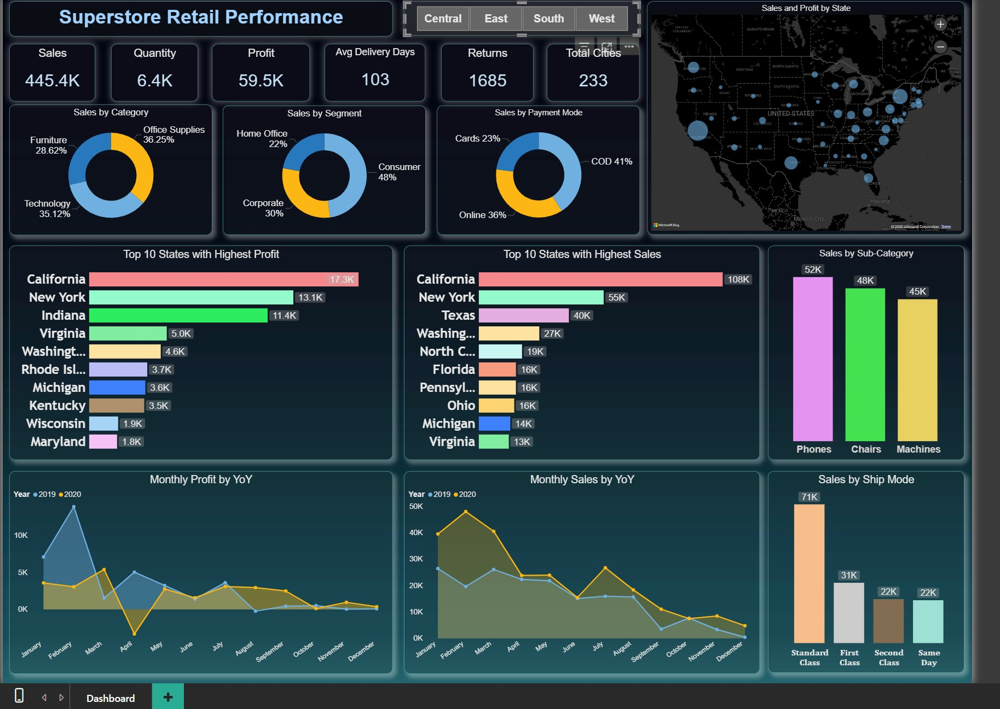
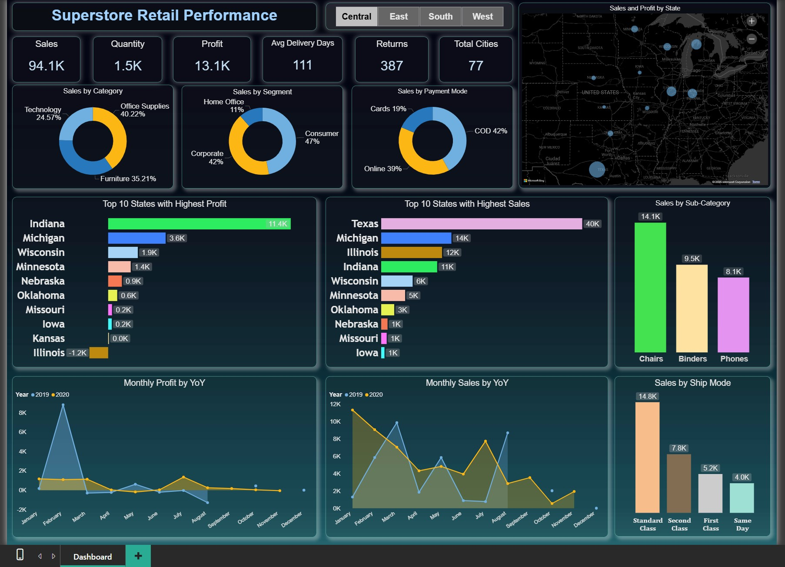

Superstore Retail Performance Analysis
A dynamic and interactive Power BI dashboard for visualizing sales, profit, and logistics across a national retail chain.
Power BI · DAX · SQL · Data Modeling · ETL
Project Overview
Analyzing vast, siloed retail data from spreadsheets is inefficient and prone to errors. The motivation for this project was to create a centralized, single source of truth for business monitoring. I aimed to transform raw transactional data into an interactive dashboard that would empower business leaders to make faster, more informed strategic decisions.
Key Features
- Interactive Visualizations: Allows users to dynamically filter data by region, category, and time period, and drill down from a high-level overview to granular details.
- Holistic Performance Tracking: Consolidates sales, profit, order quantities, and returns into a single, cohesive view to track the complete lifecycle of a sale.
- Geospatial Analysis: A map visualization identifies top-performing and underperforming states and cities, revealing regional strengths and weaknesses.
- Automated Data Refresh: The dashboard is configured for automated daily refreshes, ensuring that the insights always reflect the latest business data without manual intervention.
Data & Reporting Workflow
- Sales and product data were extracted from a SQL database, while regional targets and returns data were integrated from Excel files.
- Power Query was used to perform all ETL (Extract, Transform, Load) operations, including data cleaning, merging tables, and creating a structured data model.
- Complex business logic and KPIs (e.g., Profit Margin, Year-over-Year Growth) were created using DAX (Data Analysis Expressions).
- The finalized data model feeds the interactive visuals on the dashboard, providing fast and consistent query performance.
- The report was published to the Power BI service for secure sharing with stakeholders and to manage scheduled data refreshes.
Technical Architecture
- BI Platform: Developed in Power BI Desktop and deployed to the Power BI Service for cloud-based access and collaboration.
- Data Transformation & Modeling: Utilized Power Query for all ETL processes. A star schema data model was designed in Power BI to optimize performance and clarity.
- Analytical Language: Wrote advanced DAX measures and calculated columns to derive key business insights that were not available in the source data.
- Data Sources: Connected to a SQL Server database for core sales transactions and integrated with multiple Excel workbooks for supplementary data.
- Visualization Engine: Employed a range of Power BI's native visuals, including maps, bar charts, slicers, cards, and matrices, to build a user-friendly interface.
Visual Highlights

Users can drill down into specific product categories to analyze sales trends and profitability.

Geospatial analysis highlights sales concentration and helps identify opportunities for regional growth.
Full Tech Stack Used
- BI Platform: Power BI (Desktop & Service)
- Languages: DAX, SQL
- Data Integration: Power Query (ETL)
- Database: SQL Server
- Supporting Tools: Microsoft Excel
- Core Concepts: Data Modeling, Business Intelligence, KPI Reporting
Learnings & Impact
This project was a fantastic exercise in transforming raw, tabular data into actionable business intelligence. It replaced hours of manual spreadsheet analysis with a fully automated, self-service analytics solution for stakeholders. The insights generated directly helped identify the most profitable product categories and regions. The project reinforced the critical importance of a solid data model as the foundation for any successful BI solution and provided deep experience in writing complex DAX queries to design user-centric dashboards that tell a clear story.